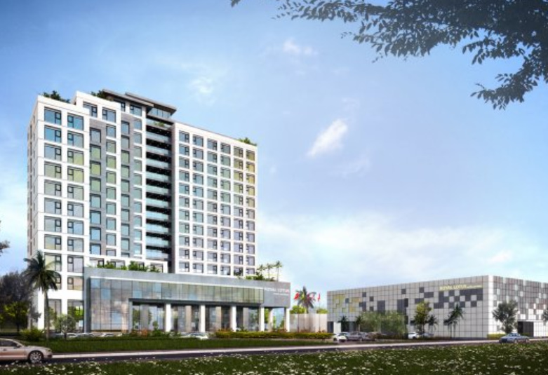

호텔정보
|
아름다운 미케 비치(My Khe Beach)를 마주한 4성급 호텔로 도보 약 5분이면 해변가에 닿을 수 있으며 차량 이동 시 다낭 대성당(Nha Tho Con Ga)까지 약 8분, 오행산(Ngu Hanh Son)까지 약 10~15분가량 소요된다.
깔끔하게 꾸며진 모던한 객실에서 바다 또는 도시의 전망을 즐길 수 있으며 객실 내 편의시설로 에어컨, LCD TV, 무선 인터넷, 미니바, 커피/티 메이커 등이 완비되어 있다.
이 외에 바와 레스토랑, 베이커리 숍, 피트니스센터, 야외 수영장, 스파 시설, 회의/연회장, 노래방 등 다채로운 부대시설이 호텔 내에 마련되어 있다. |